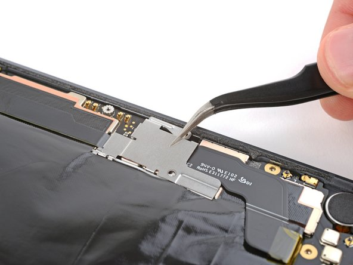

Diagnose weak vibration and replace a Pixel 8a haptic motor
Separate disabled haptics, a rattling assembly and a failed actuator. Follow the model’s actual rear-entry service route.
Test three vibration sources with the phone closed
The actuator turns an electrical drive signal into a vibration you can feel through the case. A weak buzz or a missing vibration can come from accessibility settings, sound mode, an app, a loose frame part or the actuator path. Remove the detachable case and compare the same three sources before opening a phone. T47 · Acoustics and haptics.
Record the exact model. On the owned test phone, check vibration intensity and whether touch feedback and call vibration are enabled. Record any focus, bedtime or battery settings that change the test. An app may have its own vibration setting.
Use one known touch action, an alarm with vibration enabled, and an incoming call from a consenting person. Start each with the phone on the same soft surface. Rate each observation as absent, weak, normal or rattling. Keep the same phone case state and volume when comparing sound and vibration.
On a supported Pixel, use the official diagnostics path and look up the tests available for that device. A single app failing while other vibration sources work suggests a settings or software path. A repeatable rattle across several sources merits mechanical inspection. Keep the observations as evidence. Google self-repair and Pixel diagnostics.

Photo by Spencer Day and iFixit contributors, with on-page callouts. Original photo · CC BY-NC-SA 3.0.
Photo by Spencer Day and iFixit contributors, with on-page callouts. Original photo · CC BY-NC-SA 3.0.
Watch. Follow the Pixel 8a from rear cover to wireless charging assembly and the lower enclosure. Use the written guide for screw and cable order. PBKreviews’ Pixel 8a disassembly on YouTube.
Plan the Pixel 8a disassembly
This model enters through the back. Use the exact model guide, including the antenna branch for the applicable regional version. The haptic actuator is deep in the enclosure. It is a more involved repair than the external symptoms suggest. Practise this path on a decommissioned Pixel 8a or a known-good donor. Use the guide’s battery charge limit, specified warming procedure, pick depth and fastener map. Back up data before an authorised repair, power off and disconnect external power. A swollen or damaged battery needs a separate battery handling decision. iFixit’s complete Pixel 8a actuator procedure · Google’s Pixel 8a repair manual.
Mark the guide stages before work. Rear cover and wireless charging assembly come before battery disconnection. Follow the battery-disconnect step before working farther. Photograph each bracket and screw location as parts come out.
Follow the manual through the model’s speaker, antenna and logic-board steps to expose the actuator. Note which nearby thermal pads and acoustic seals must return to their original places. The lever point in the actuator photo belongs to this model and stage. Avoid levering against a battery, board or neighbouring cable.
Check the new part against the original and confirm its mounting and contact arrangement. Fit the correct adhesive or gasket as the guide specifies. Use the documented reassembly and authorised test sequence. Restore all brackets, flexes and fasteners before a finished return-to-service check. Document any seal replacement and any available approved seal test.
Close the job on the same three stimuli
| Result | Next comparison |
|---|---|
| Touch never vibrates, but call and alarm vibration work | Verify the haptics setting and whether the same touch action is supported on that build. |
| Most stimuli buzz and rattle with the case removed | Check which assembly is loose or contacting the enclosure before deciding which part to order. |
| All controlled sources are absent and a known compatible part restores them | Retest the same stimuli before documenting an actuator fault. Check any functions disturbed while gaining access. |
Record the three before-and-after results and the functions you disturbed, such as wireless charging, speakers, microphones and mobile service. Leave the camera and data alone unless the customer authorises the checks.